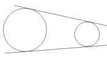
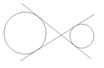
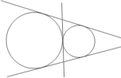
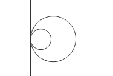
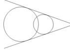
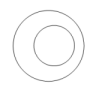

The blue line in the figure above is called the "tangent to the circle c". Another way of saying it is that the blue line is "tangential" to the circle c. (Pronounced "tan-gen-shull").
The line barely touches the circle at a single point. If the line were closer to the center of the circle, it would cut the circle in two places and would then be called a secant. In fact, you can think of the tangent as the limit case of a secant. As the secant line moves away from the center of the circle, the two points where it cuts the circle eventually merge into one and the line is then the tangent to the circle.
As can be seen in the figure above, the tangent line is always at right angles to the radius at the point of contact.
Given two circles, there are lines that are tangents to both of them at the same time.
If the circles are separate (do not intersect), there are four possible common tangents:
 |
 |
| Two external tangents
See Constructing tangents to two circles (external) with compass and straightedge. |
Two internal tangents |
If the two circles touch at just one point, there are three possible tangent lines that are common to both:

If the two circles touch at just one point, with one inside the other, there is just one line that is a tangent to both:

If the circles overlap - i.e. intersect at two points, there are two tangents that are common to both:

If the circles lie one inside the other, there are no tangents that are common to both. A tangent to the inner circle would be a secant of the outer circle.
